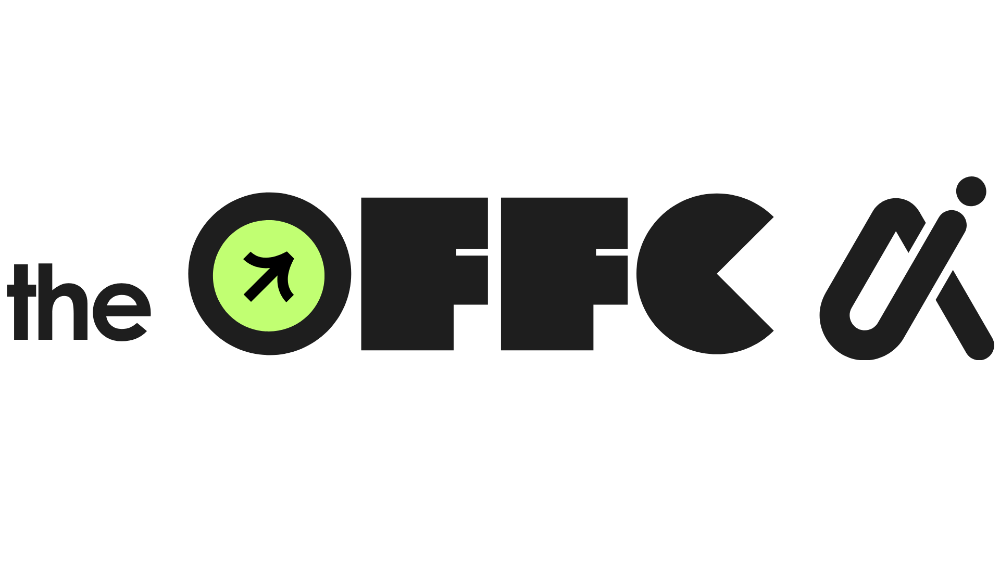

Introducing Offc 1.0 …… Intelligence beyond chat
Signature Protocol: Instead of asking questions, Offc assumes future failure and backtraces critical blindspots before capital is deployed.
Reinforcement Learning from Human Feedback (RLHF) optimized LLMs for conversational agreeableness. This creates flattering assistants that nod along to bad business assumptions, invent hallucinated numbers, and produce generic 5-point lists with zero accountability. For high-stakes capital allocation, chatbot advice is a liability.
We engineered an OS natively calibrated for business reality. Offc executes a multi-agent adversarial protocol: instead of answering "What do you think?", it simulates your company 6 months into the future after catastrophic failure, systematically reverse-engineering every blindspot before you write the check.
Typed, schema-enforced output protocols that management, finance, and operations teams can act on directly.
Every analysis includes mathematical probability distributions grounded in real company accounting, not speculation.
Failure modes immediately map to concrete, preventative tasks assigned with strict deadlines to team owners.
LLMs give conversational advice. Offc reverse-engineers catastrophic failure before capital leaves your bank account. Select a verified regional preset or type your company's own proposal to run an instant 180-day pre-mortem audit.
Runway shrinks to 2.4 months. Cash buffer drops below emergency AED 300,000 threshold.
Single point of failure on primary contractor fit-out timeline (+44 day estimated slippage).
Must pre-secure binding 3PL customer contracts before lease execution.
Test how operational shocks impact payback timelines and automatically generate binding mitigation protocols for your leadership team.
Active Decision: Capex Allocation for Production Line [AED 300,000]
Orchestrated specialist reasoning, synthesized for executive leadership. Watch your decisions audited in real time through an adversarial boardroom debate between CEO, CFO, CRO, Sales, and Operations.
"Evaluating the AED 300,000 production line proposal. While expanding production aligns with our 18-month revenue target, the CFO Agent flagged a 42% risk of a working capital crunch if installation slips past 90 days."
"My synthesis: We approve the capital allocation conditionally. Antidotes #1 and #2 must be formally signed off by finance and sales before contracts are signed with the European manufacturer."
Two synchronized flows. One seamless decision experience. Built machine-native with sub-second audit latencies.
Why Fortune 500 risk protocols belong in the hands of agile SMEs, and how reverse-engineering failure protects real capital.
By simulating supply chain delays before signing supplier POs, the team discovered a 6-month cash trap and restructured payment terms.
Generative text optimizes for conversational fluency. Offc optimizes for cold, mathematical failure prevention.
A deep dive into our deterministic schema enforcement and tenant-isolated accounting context builders.